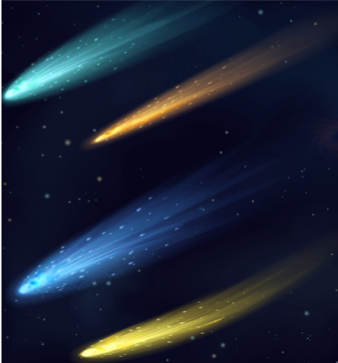

 Кометата (на старогръцки: κομήτης или komḗtēs – с коса, космат) е малък астрономически обект в Слънчевата система, подобна на астероид, но съставена предимно от лед (въглероден диоксид, метан и вода), прах, скални частици и примеси от различни минерали. Поради тази причина понякога кометите биват наричани „топки от мръсен сняг“. Когато е достатъчно близо до Слънцето, показва видима кома (тънка, размита, временна атмосфера), а понякога и опашка. Тези явления се дължат на въздействието на слънчевата радиация и слънчевия вятър върху ядрото на кометата. Кометите се движат като правило по високоексцентрични елиптични орбити, чийто афелий често лежи отвъд орбитата на Плутон. Имат широк спектър на орбитални периоди, вариращи от няколко години до стотици хиляди години. Тези с малък период произхождат от Пояса на Кайпер, или свързания с него разпръснат диск, който се намира отвъд орбитата на Нептун. Тези с по-дълъг период произхождат от облака на Оорт – сферичен облак от ледени тела във външната Слънчева система, където температурите са достатъчно ниски да позволят съществуването на водата, метана и въглеродния диоскид в твърдо агрегатно състояние. Някои комети след многократни преминавания през вътрешната част на Слънчевата система загубват външния си слой от летливи елементи и в някои отношения са неотличими от астероиди. Редки комети с хиперболични орбити минават веднъж през вътрешната част на Слънчевата система, след което биват изхвърляни в междузвездното пространство. Кометите са наблюдавани още от древни времена и традиционно се считат за лошо знамение. За кометите се смята, че произхождат от облака на Оорт и че навлизат във вътрешните части на Слънчевата система след гравитационни въздействия на външни обекти, например съседните звезди. Когато дадена комета се приближи достатъчно към Слънцето, нейните външни слоеве започват да се изпаряват под въздействието на неговото лъчение. Потоците от газ и прах формират гигантска по размери атмосфера около ядрото на кометата наречена кома. Слънчевата радиация и слънчевият вятър пораждат опашката на кометата. Тази опашка винаги сочи в посока обратна на Слънцето. Отделените газове и прах следват отличаващи се траектории, тъй като газовете се влияят силно от слънчевия вятър и биват издухвани директно в посока обратна на Слънцето, за разлика от праха, който в голямата си част остава по орбитата на кометата. Ядрото на кометата рядко е по-голямо от 50 km, но кометата може да бъде с размери сравними с тези на Слънцето. Кометната опашка може да се простира до 1 АЕ. Кометите биват класифицирани спрямо орбиталните им периоди на късо – и дългопериодични комети. Късопериодичните имат орбитални периоди по-малки от 200 години, а дългопериодичните – по-големи. Еднократните комети имат параболични или хиперболични траектории и след определено време напускат Слънчевата система. Късопериодичните комети (като например кометата Енке) вероятно произхождат от пояса на Кайпер, а дългопериодичните от облака на Оорт. Предложени са множество механизмни, които да обяснят как кометите попадат във вътрешността на Слънчевата система след гравитационни въздействия от други тела като съседни на Слънцето звезди, неизвестни планети и кафяви джуджета (виж Планета X, и Немесис). Поради ниската им маса и елиптичните им орбити, които ги отвеждат близко до газовите гиганти, кометите често биват гравитационно повлияни и то най-вече от масивния Юпитер. Често техните афелии са на еднакво разстояние от Слънцето като орбиталния радиус на някоя от планетите вследствие на орбитални резонанси. Голям брой комети наблюдавани в миналото са изгубени. Те са били изхвърлени от Слънчевата система при близко преминаване край някой от газовите гиганти, изчерпали са летливите си елементи и нямат наблюдаема кома или опашка, или просто тяхната орбита не е била своевременно установена с достатъчна точност, за да бъдат следени. Понякога някои от новооткритите комети са били открити в миналото, но изгубени стари като например кометата 11P/Tempel-Swift-LINEAR наблюдавана за пръв път през 1869 г., но поради въздействието на Юпитер изгубена след 1908 г., за да бъде намерена пак от системата LINEAR през 2001 г.